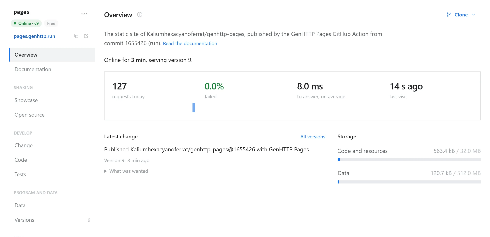
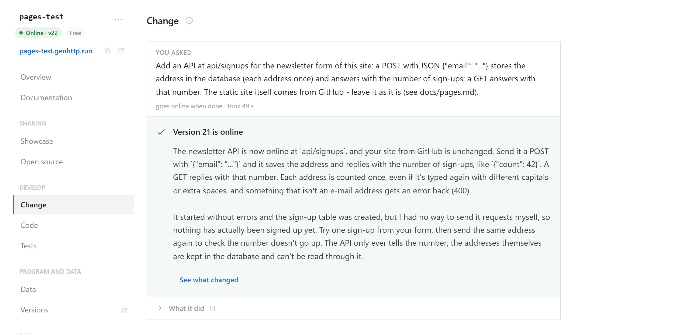

Your GitHub Pages site, hosted on GenHTTP Lambda.
Change one step of your workflow. Keep your build, get traffic statistics, a request log and every deployment, with no secret and no account.
steps:
- id: deployment
uses: actions/deploy-pages@v5
uses: Kaliumhexacyanoferrat/genhttp-pages@v1
with:
activation: gp-…Every site gets an editor
How the site is doing at a glance, and what changed last. This is the editor of this very page.

Activate your repository
-
Activate it
-
Change the workflow
Replace the deploy step, as at the top of this page:
uses: Kaliumhexacyanoferrat/genhttp-pages@v1 with: activation: gp-…Paste your workflow, get it back changed
My site is published from a branch
Save as
.github/workflows/genhttp-pages.ymlon the default branch. It builds with Jekyll unless there is a.nojekyll.I have no Pages workflow yet
Save as
.github/workflows/genhttp-pages.yml: -
Push
The first run binds the code to your repository and publishes the site. The job needs
id-token: write, which Pages workflows already have. Everything else
Need an API? Ask for it.
Say what your site should be able to do in the editor's Change section. The
platform's agent writes the code beside your site and tries it in a draft before
it goes online. Your pages call it with fetch('api/…'), and your next
push keeps it.

Prefer your own agent? Connect it to GenHTTP Lambda and hand it your editor link:
claude mcp add --transport http genhttp https://genhttp.dev/mcp